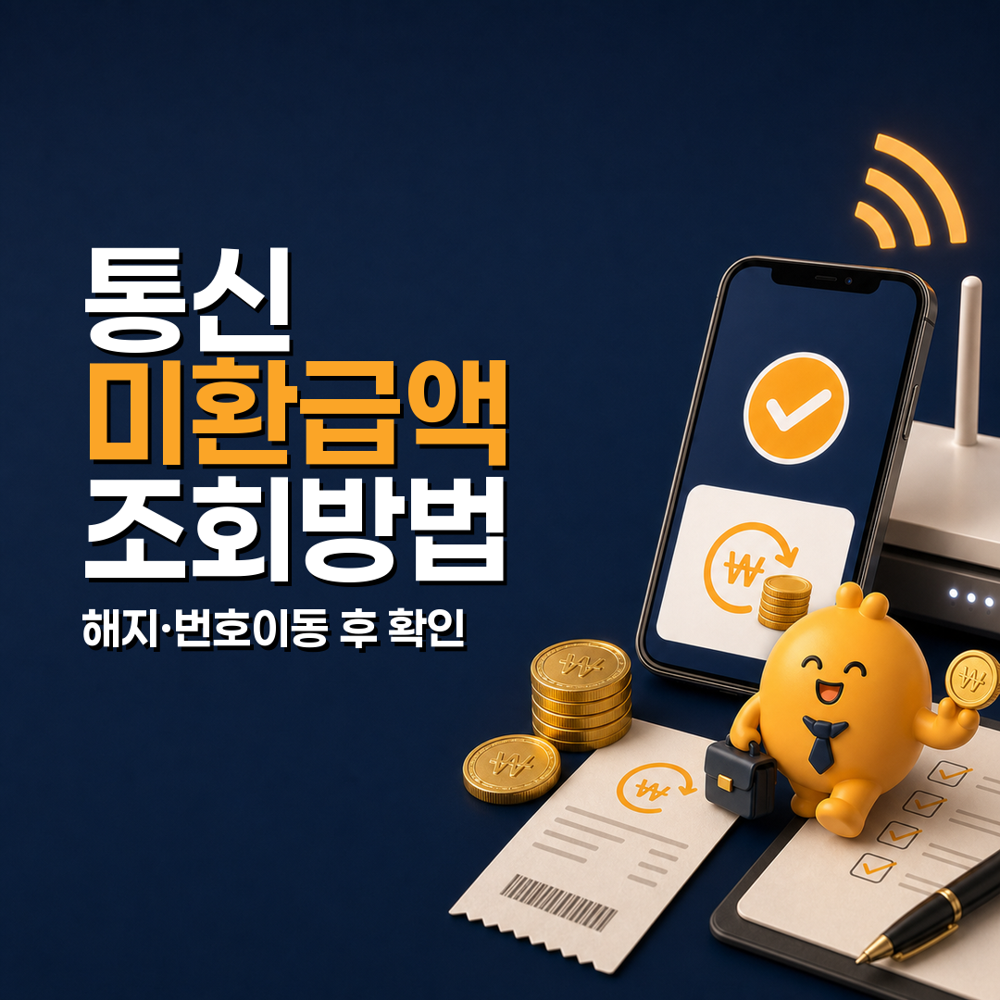
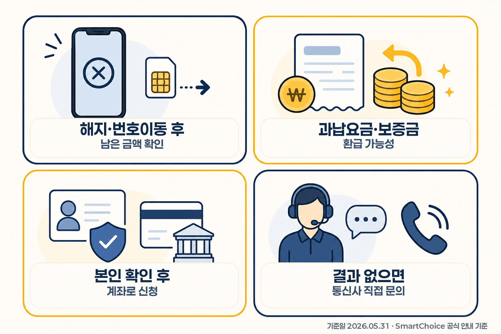

휴면예금 찾아줌: 잊고 있던 예금·보험금 조회
휴면예금 찾아줌: 잊고 있던 예금·보험금 조회
기준일 2026-06-01
출처/태그 미리보기
Tags
Sources 기준일 2026-06-01. 주요 출처: 서민금융진흥원 휴면예금 찾아줌 공식 안내, 서민금융진흥원 개인정보파일 내역. 공식 안내 URL: https://www.kinfa.or.kr/financialLife/sleepmoney.do.
작성된 글을 리스트에서 확인하고 제목, HTML 본문, 태그를 바로 복사하는 단일 대시보드입니다.
총 8개 · Manual Naver publication only · No account-action controls
휴면예금 찾아줌: 잊고 있던 예금·보험금 조회
기준일 2026-06-01
Tags
Sources 기준일 2026-06-01. 주요 출처: 서민금융진흥원 휴면예금 찾아줌 공식 안내, 서민금융진흥원 개인정보파일 내역. 공식 안내 URL: https://www.kinfa.or.kr/financialLife/sleepmoney.do.

통신 미환급액 조회: 휴대폰 해지·번호이동 후 남은 돈 찾는 법
기준일 2026-05-31
Tags
Sources 기준일 2026-05-31. 주요 출처: 스마트초이스 통신 미환급액 조회 안내, 스마트초이스 간편조회, 스마트초이스 모바일 통신 미환급액 안내, 스마트초이스 유료방송 미환급액 조회 안내.

자동차보험 차량 5부제 할인 특약
기준일 2026-05-31
Tags
Sources 출처: 금융위원회 2026-04-27 보도자료 및 PDF 첨부, 조회일 2026-05-31. 실제 가입 가능 여부와 세부 약관은 보험사별 공지를 확인해야 합니다.

금융취약계층 생계자금 대출 선택지 정리
기준일 2026-05-31
Tags
Sources 기준일 2026-05-31. 금융위원회 보도자료(2026-03-30)와 서민금융진흥원 금융취약계층 생계자금, 불법사금융예방대출, 햇살론일반 상품 페이지 기준.

청년미래적금 6월 22일 신청 전 체크리스트: 5부제·금리·기여금 정리
기준일 2026-05-30
Tags
Sources 기준일 2026-05-30. 금융위원회 2026-05-29 「청년미래적금 취급기관별 금리 공시」, 금융위원회 2026-04-23 「청년미래적금 출시 준비 점검회의 개최」 기준.

국민참여형 국민성장펀드, ISA와 헷갈리는 포인트 정리
기준일 2026-05-29
Tags
Sources 금융위원회 2026-05-06·2026-05-21·2026-05-26 공개자료 및 국회예산정책처 2026-04-30 NABO Focus 기준. 판매현황과 세제·상품 조건은 변경될 수 있어 판매사와 공식 공지를 재확인해야 함.

5세대 실손보험 비교: 기존 실손 유지·전환 전 확인할 기준
기준일 2026-05-29
Tags
Sources 기준일 2026-05-29. 금융위원회 보도자료(2026-05-06), 금융위원회·금융감독원 5세대 실손보험 Q&A(2026-05), 금융위원회 카드뉴스 기준. URL: https://www.fsc.go.kr/no010101/86831 , https://www.fsc.go.kr/comm/getFile?srvcId=BBSTY1&upperNo=86831&fileTy=ATTACH&fileNo=14 , https://www.fsc.go.kr/no040101?cnId=3140&curPage=3

6월 출시 예정으로 언급되는 슈퍼 ISA 계좌 정리
기준일 2026-05-28
Tags
Sources 재정경제부 2026년 경제성장전략, 국회예산정책처 NABO Focus 제156호, 재정경제부 2026년 경제성장전략 정책 페이지 기준. Retrieved 2026-05-28.
기준일: 2026년 6월 1일
통장을 정리하다 보면 “예전에 만들었던 계좌에 돈이 남아 있지 않을까?”라는 생각이 들 때가 있습니다. 이럴 때 검색되는 서비스가 휴면예금 찾아줌입니다. 이 주제는 단순히 “조회해 보세요”로 끝낼 수도 있지만, 실제로는 한 가지를 먼저 구분해야 합니다.
휴면예금 찾아줌은 일반 은행 계좌 잔액을 전부 보여주는 서비스가 아니라, 서민금융진흥원에 출연된 휴면예금·휴면보험금을 조회하고 지급 신청하는 공식 경로입니다. 그래서 은행 앱에서 보이는 잔액 조회나 계좌정보통합관리서비스와 범위가 다를 수 있습니다.
핵심만 먼저 정리하면 이렇습니다.
| 구분 | 무엇을 확인하나요? | 헷갈리기 쉬운 포인트 |
|---|---|---|
| 휴면예금 찾아줌 | 서민금융진흥원에 출연된 휴면예금·휴면보험금 조회·지급신청 | 모든 은행 계좌 잔액 조회가 아님 |
| 은행 앱/거래은행 | 아직 해당 금융회사에 남아 있는 계좌·잔액 | 휴면예금 찾아줌에 나오지 않아도 은행 앱에서 보일 수 있음 |
| 계좌정보통합관리서비스 | 여러 금융권 계좌를 한 번에 확인하는 계좌 정리 경로 | 서민금융진흥원 출연 휴면예금 지급신청과 목적이 다를 수 있음 |
| 휴면보험금 | 소멸시효가 완성되어 출연된 보험금 등 | 보험계약 자체를 찾는 서비스와는 목적이 다름 |

이 글은 “숨은 돈이 무조건 나온다”는 글이 아닙니다. 서민금융진흥원 공식 안내를 기준으로 휴면예금 찾아줌이 무엇을 찾는 서비스인지, 조회 결과를 어떻게 해석해야 하는지, 은행 계좌조회와 어디가 다른지를 정리합니다.
서민금융진흥원 안내에 따르면 휴면예금은 소멸시효가 완성된 예금, 보험금 등을 말합니다. 여기서 중요한 표현은 “서민금융진흥원에 출연된”입니다. 금융회사에 그대로 남아 있는 일반 계좌 잔액을 모두 보여주는 개념이 아니라, 일정 요건을 거쳐 서민금융진흥원에 출연된 휴면재산을 조회하는 구조입니다.
공식 안내에서 확인되는 큰 범위는 다음과 같습니다.
| 구분 | 공식 안내상 범위 | 먼저 생각할 점 |
|---|---|---|
| 휴면예금 | 은행, 저축은행 등에서 출연된 예금 | 오래전 만든 예금·적금·계좌 이력 확인 |
| 휴면보험금 | 생명보험, 손해보험, 우체국보험 등에서 출연된 보험금 | 해지환급금, 만기보험금, 계약자배당금 등 가능 |
| 기타 출연 재산 | 출연업권별로 별도 구분 | 상품 종류와 출연 여부에 따라 조회 결과가 달라질 수 있음 |
따라서 휴면예금 찾아줌의 핵심 질문은 “내 모든 통장 잔액이 얼마인가?”가 아니라 “서민금융진흥원에 출연된 휴면예금·보험금이 있는가?”입니다.
휴면예금 찾아줌에서 결과가 없을 수 있습니다. 하지만 그 의미를 너무 넓게 해석하면 안 됩니다. 결과가 없다는 것은 우선 서민금융진흥원에 출연된 휴면예금·보험금 조회 결과가 없다는 뜻에 가깝습니다.
예를 들어 이런 경우는 별도로 볼 수 있습니다.
| 상황 | 다음 확인 경로 |
|---|---|
| 아직 은행 계좌가 살아 있는 경우 | 거래은행 앱, 은행 홈페이지, 계좌정보통합관리서비스 |
| 오래전 계좌가 있지만 출연되지 않은 경우 | 해당 금융회사 고객센터 또는 지점 확인 |
| 보험계약 자체를 찾고 싶은 경우 | 보험계약 조회 서비스나 보험사 안내 확인 |
| 사망한 가족 명의 재산을 확인해야 하는 경우 | 상속인 휴면예금 조회 또는 상속인 금융거래조회 등 별도 절차 확인 |
이 차이 때문에 이 글의 핵심은 “조회 버튼을 누르세요”가 아니라 조회 결과를 어디까지 믿고, 다음에 무엇을 확인해야 하는지입니다.
많이 헷갈리는 부분을 한 번 더 분리해 보겠습니다.
| 비교 기준 | 휴면예금 찾아줌 | 은행 앱/계좌정보통합관리서비스 |
|---|---|---|
| 주된 목적 | 서민금융진흥원 출연 휴면예금·휴면보험금 조회·지급신청 | 여러 금융회사 계좌·잔액 확인과 계좌 정리 |
| 조회 대상 | 출연된 휴면재산 중심 | 금융회사에 남아 있는 계좌 중심 |
| 결과 해석 | 조회 결과가 있으면 지급신청 가능 여부 확인 | 계좌 상태, 잔액, 해지·이전 가능 여부 확인 |
| 주의점 | 피싱 링크가 아닌 공식 주소·앱에서 본인확인 | 계좌 해지·잔고이전 전 자동이체 등 확인 필요 |
즉, 둘 중 하나만 보면 끝나는 구조가 아닐 수 있습니다. 오래된 금융자산을 정리하려면 출연된 휴면재산은 휴면예금 찾아줌으로, 아직 금융회사에 남아 있는 계좌는 은행 앱이나 계좌조회 서비스로 나누어 보는 것이 자연스럽습니다.
휴면예금 찾아줌은 본인 명의 기준으로 조회·지급신청을 진행하는 서비스입니다. 조회 전에는 아래를 준비해 두면 좋습니다.
특히 지급신청 단계에서는 개인정보와 계좌정보가 다뤄질 수 있습니다. 그래서 문자나 광고 링크를 바로 누르기보다, 서민금융진흥원 공식 홈페이지나 공식 앱, 정부24·어카운트인포 등 공식 경로로 접근하는 편이 안전합니다.
조회 결과가 있다면 금액만 보고 끝내지 말고 아래 항목을 확인하세요.
| 확인 항목 | 왜 중요한가요? |
|---|---|
| 출연 금융회사 | 어느 은행·보험사에서 출연된 돈인지 알 수 있음 |
| 금액 | 지급신청 대상 금액과 실제 지급 가능 금액 확인 |
| 원권리자 정보 | 본인 명의인지, 상속·대리 절차가 필요한지 확인 |
| 지급신청 가능 여부 | 온라인으로 바로 가능한지, 방문·서류가 필요한지 확인 |
| 지급 계좌 | 본인 명의 계좌인지, 계좌 정보가 정확한지 확인 |
조회 결과가 있다고 해서 모든 절차가 즉시 끝나는 것은 아닐 수 있습니다. 금액, 명의, 상속 여부, 본인확인 방식, 금융회사 자료에 따라 추가 확인이 필요할 수 있습니다.
휴면예금은 “숨은 돈”, “잠자는 돈”이라는 표현 때문에 피싱 소재로 쓰이기 쉽습니다. 특히 계좌정보와 인증정보가 들어갈 수 있기 때문에 링크를 조심해야 합니다.
다음 표현이 보이면 멈추고 공식 주소를 다시 확인하는 것이 좋습니다. 문자나 광고 링크를 누르기보다, 포털에서 “서민금융진흥원 휴면예금 찾아줌”을 직접 검색하거나 서민금융진흥원 공식 안내 페이지를 확인하는 편이 안전합니다.
공식 안내 URL: https://www.kinfa.or.kr/financialLife/sleepmoney.do
정상적인 조회도 본인확인이 필요할 수 있지만, 계좌 비밀번호나 보안카드 전체 번호, 원격제어 앱 설치를 요구하는 방식은 경계해야 합니다.
그렇게 단정하기 어렵습니다. 휴면예금 찾아줌은 서민금융진흥원에 출연된 휴면예금·휴면보험금을 중심으로 조회합니다. 아직 금융회사에 남아 있는 계좌나 보험계약은 은행 앱, 계좌정보통합관리서비스, 보험사 안내 등 다른 경로에서 확인해야 할 수 있습니다.
서민금융진흥원 공식 안내는 휴면보험금을 휴면예금 범위 안에서 설명하고, 생명보험·손해보험·우체국보험에서 출연된 해지환급금, 만기보험금, 계약자배당금 등을 예로 듭니다. 다만 보험계약 자체를 폭넓게 찾는 목적이라면 별도 보험조회 경로와 구분해야 합니다.
일반 조회는 본인 명의 기준입니다. 사망한 원권리자의 출연 휴면예금·보험금은 상속인이 조회할 수 있는 절차가 별도로 안내되어 있으므로, 일반 본인 조회와 같은 방식으로 생각하면 안 됩니다.
목적이 다릅니다. 은행 앱은 해당 금융회사 계좌 상태를 확인하는 데 유용하고, 휴면예금 찾아줌은 서민금융진흥원에 출연된 휴면재산 조회·지급신청이 핵심입니다. 오래된 금융자산을 정리하려면 두 범위를 구분해서 보는 것이 좋습니다.
공식 사이트나 공식 앱에서 본인확인을 거쳐 조회하는 것은 제도상 제공되는 절차입니다. 다만 문자 링크, 광고성 페이지, 대행 수수료 요구, 원격제어 앱 설치 요구는 피해야 합니다.
휴면예금 찾아줌은 잊고 있던 돈을 확인하는 데 유용한 공식 경로입니다. 하지만 핵심은 “무조건 돈이 나온다”가 아니라 어떤 돈을 조회하는 서비스인지 정확히 아는 것입니다.
정리하면 이렇게 보면 됩니다.
출처 기준일은 2026년 6월 1일입니다. 실제 조회 가능 여부, 지급신청 가능 여부, 필요 서류, 온라인·방문 신청 가능 범위는 서민금융진흥원과 해당 금융회사 안내에 따라 달라질 수 있습니다.
면책 문구: 이 글은 서민금융진흥원 등 공개 공식 안내를 바탕으로 한 일반 정보 정리입니다. 특정 금액의 존재, 지급 가능성, 지급 시점, 필요 서류를 보장하지 않으며, 개인별 금융·법률 자문이 아닙니다. 실제 조회·지급신청 전에는 반드시 공식 사이트와 해당 금융회사 안내를 확인하세요.
기준일: 2026년 5월 31일
휴대폰을 해지했거나 번호이동을 한 뒤에는 “마지막 달 요금은 다 정산됐겠지”라고 생각하기 쉽습니다. 그런데 해지 시점에 요금을 미리 냈거나, 보증금·과납요금처럼 정산 뒤 남는 금액이 생기면 통신 미환급액으로 남아 있을 수 있습니다.
먼저 핵심만 보면 이렇습니다.
| 구분 | 확인할 내용 | 놓치기 쉬운 포인트 |
|---|---|---|
| 무엇인가요? | 유·무선 통신서비스 해지 또는 번호이동 해지 뒤 돌려받지 못한 금액 | 마지막 요금 정산 뒤 과납·보증금 등이 남을 수 있음 |
| 어디서 보나요? | 스마트초이스 통신 미환급액 조회 | 공식 주소를 직접 확인하고 접속하는 것이 안전 |
| 누가 조회하나요? | 원칙적으로 본인 명의 기준 조회·환급 신청 | 법인·만 14세 미만·외국인 등은 통신사 직접 문의가 필요할 수 있음 |
| 언제 조회하나요? | 공식 안내 기준 조회 가능 시간이 정해져 있음 | 일요일·공휴일 또는 시스템 점검 시간에는 조회가 안 될 수 있음 |
| 결과가 없으면? | 미환급액이 없거나, 별도 확인이 필요한 상태일 수 있음 | 해지 이력·명의·통신사 조건을 확인하고 필요하면 통신사 고객센터 문의 |

이 글은 특정 통신사나 유료 서비스를 추천하는 글이 아닙니다. 스마트초이스 공식 안내 기준으로 통신 미환급액이 무엇인지, 조회할 때 어떤 정보를 확인해야 하는지, 결과가 없을 때 어디까지 점검할지를 정리한 글입니다.
통신 미환급액은 통신서비스를 해지하거나 번호이동으로 해지한 뒤, 요금 정산 과정에서 돌려받을 금액이 남았는데 아직 고객에게 환급되지 않은 금액을 말합니다. 스마트초이스 안내는 유·무선 서비스 해지 과정에서 발생하는 과납 요금, 보증금 성격의 미환급 금액 등을 조회 대상으로 설명합니다.
예를 들어 이런 상황을 떠올리면 이해가 쉽습니다.
| 상황 | 미환급액이 생길 수 있는 이유 |
|---|---|
| 휴대폰 번호이동 | 기존 통신사에서 마지막 요금을 정산하는 과정에서 남는 금액이 있을 수 있음 |
| 인터넷·전화 해지 | 선납·보증금·장비 관련 정산 후 돌려받을 금액이 남을 수 있음 |
| 오래 전 해지한 회선 | 연락처 변경, 주소 변경 등으로 환급 안내를 놓쳤을 수 있음 |
| 가족 명의 회선 정리 | 본인 명의가 아니면 바로 조회·신청이 어려울 수 있음 |
중요한 점은 “누구나 무조건 받을 돈이 있다”가 아니라는 것입니다. 통신 미환급액은 실제 해지 이력과 정산 결과가 있어야 조회됩니다. 그래서 조회 결과가 없다고 해서 손해를 본 것은 아니고, 조회 결과가 있다면 공식 절차로 환급 신청을 검토하면 됩니다.
가장 먼저 확인할 곳은 스마트초이스의 통신 미환급액 조회 서비스입니다. 스마트초이스는 통신요금 정보, 요금제 비교, 통신 미환급액 조회 같은 서비스를 제공하는 공식 통신요금 정보 포털입니다.
조회할 때는 검색 결과의 광고 링크나 문자 메시지 링크를 바로 누르기보다, 브라우저 주소창에서 스마트초이스 공식 주소를 확인하는 편이 안전합니다. “미환급금 찾아준다”는 말로 개인정보나 계좌번호를 요구하는 전화·문자는 피싱일 수 있습니다.
정리하면 조회 경로는 이렇게 보는 것이 좋습니다.
| 경로 | 장점 | 주의할 점 |
|---|---|---|
| 스마트초이스 통신 미환급액 조회 | 여러 통신사 미환급액을 한 번에 확인하는 공식 경로 | 본인 확인 정보 입력 전 공식 주소 확인 |
| 통신사 홈페이지·고객센터 | 특정 통신사 해지 건을 직접 확인 가능 | 가입자 명의, 해지 시점, 고객번호 확인이 필요할 수 있음 |
| 문자·전화로 온 환급 안내 | 실제 통신사 안내일 수도 있음 | 링크 클릭보다 공식 앱·홈페이지·대표번호로 재확인 |
이 글의 기준은 공식 조회 서비스와 통신사 직접 문의입니다. 개인이 만든 조회 대행, 원격제어, 수수료 요구 방식은 이용하지 않는 편이 안전합니다.
통신 미환급액 조회는 “내 이름으로 남아 있는 금액이 있는지” 확인하는 절차입니다. 따라서 본인 확인이 핵심입니다. 스마트초이스 안내에 따르면 환급 신청은 실명확인과 본인 명의 계좌 확인을 거치는 구조로 안내됩니다.
조회 전에는 다음을 준비해 두면 좋습니다.
여기서 특히 많이 헷갈리는 부분은 가족 명의입니다. 부모님 명의로 쓰던 휴대폰, 배우자 명의 인터넷, 법인 명의 회선은 내가 실제로 요금을 냈더라도 본인 명의 조회·환급 절차와 다를 수 있습니다. 이 경우에는 해당 명의자 또는 통신사 안내를 통해 확인해야 합니다.
미환급액이 조회되면 바로 “입금만 기다리면 된다”고 생각하기보다, 아래 네 가지를 확인하는 것이 좋습니다.
| 확인 항목 | 봐야 하는 이유 |
|---|---|
| 통신사명 | 어느 회선·서비스에서 생긴 금액인지 확인해야 함 |
| 금액 | 소액이라도 계좌 인증·신청 절차가 필요할 수 있음 |
| 환급 신청 가능 여부 | 일부 유형은 온라인 신청이 제한될 수 있음 |
| 계좌 명의 | 원칙적으로 본인 명의 계좌 확인이 필요할 수 있음 |
금액이 작더라도 실제 환급 신청 단계에서는 계좌 정보가 들어갈 수 있으므로, 반드시 공식 화면에서 진행해야 합니다. 반대로 조회 결과가 없으면 “환급액 없음”일 가능성이 큽니다. 다만 해지한 지 오래됐거나 명의가 다르거나, 유료방송·케이블TV처럼 통신 미환급액과 다른 서비스에 해당할 수 있다면 별도 조회 경로를 확인해야 합니다.
검색하다 보면 “통신 미환급액”과 “유료방송 미환급액”이 같이 보일 때가 많습니다. 둘 다 해지 후 남은 금액을 확인한다는 점은 비슷하지만 조회 대상은 다릅니다.
| 구분 | 주로 확인하는 대상 | 조회 전 생각할 점 |
|---|---|---|
| 통신 미환급액 | 이동전화, 유선전화, 인터넷 등 통신서비스 해지·번호이동 관련 미환급액 | 휴대폰·인터넷·전화 해지 이력 중심 |
| 유료방송 미환급액 | 케이블TV, 위성방송, IPTV 등 유료방송 해지 관련 미환급액 | 방송 서비스 해지 이력 중심 |
| 통신사 직접 문의 | 온라인 조회가 안 되거나 특수 명의·오래된 해지 건 | 고객번호·해지일·명의 확인 필요 |
따라서 “휴대폰 번호이동 후 남은 돈”을 찾고 싶다면 통신 미환급액 조회를 먼저 보고, 케이블TV나 유료방송 해지 뒤 남은 금액이 궁금하면 유료방송 미환급액 조회를 별도로 확인하는 흐름이 자연스럽습니다.
조회가 안 되거나 결과가 없을 때도 바로 포기하기보다, 아래 순서로 점검해 볼 수 있습니다.
이 과정에서 개인정보를 많이 입력하게 되므로, 주소창과 보안 연결을 확인하는 습관이 중요합니다. 공식 서비스가 아닌 곳에서 수수료, 원격제어, 신분증 사진, 계좌 비밀번호를 요구하면 진행하지 않는 것이 안전합니다.
아닙니다. 실제 해지·번호이동 정산 과정에서 미환급액이 남아 있어야 조회됩니다. 조회 결과가 없으면 환급 대상 금액이 없거나, 다른 명의·다른 서비스·통신사 직접 확인 대상일 수 있습니다.
해지 또는 번호이동 이력이 있다면 조회 자체는 해볼 수 있습니다. 다만 오래된 건은 온라인 조회만으로 확인이 어려울 수 있으므로, 조회 결과가 없고 의심되는 회선이 있다면 기존 통신사 고객센터에 직접 확인하는 편이 좋습니다.
통신 미환급액 조회와 환급 신청은 원칙적으로 명의자 본인 확인이 중요합니다. 가족이 실제 요금을 냈더라도 명의가 다르면 바로 신청이 어려울 수 있으므로, 명의자 본인이 확인하거나 통신사 안내를 따라야 합니다.
아닙니다. 통신 미환급액은 통신서비스 해지·번호이동 정산 뒤 남은 금액을 확인하는 서비스입니다. 카드포인트, 휴면예금, 세금 환급금과는 조회 기관과 대상이 다릅니다.
통신 미환급액 조회는 생활비를 아끼는 거창한 재테크라기보다, 예전에 해지한 통신서비스의 정산이 끝났는지 확인하는 작은 점검 루틴에 가깝습니다. 휴대폰 번호이동, 인터넷 해지, 유선전화 해지 이력이 있다면 한 번 확인해 볼 만합니다.
다만 핵심은 금액보다 안전한 경로입니다. 공식 스마트초이스 조회, 통신사 홈페이지 또는 고객센터 확인, 본인 명의 계좌 신청이라는 기본 원칙을 지키면 불필요한 개인정보 노출을 줄일 수 있습니다.
출처 기준일은 2026년 5월 31일이며, 실제 조회 가능 시간, 환급 신청 가능 여부, 특수 명의 처리 방식은 스마트초이스와 각 통신사 안내에 따라 달라질 수 있습니다.
면책 문구: 이 글은 공개된 공식 안내를 바탕으로 한 일반 정보 정리입니다. 실제 미환급액 존재 여부, 조회 가능 여부, 환급 신청 가능 여부, 입금 시점은 명의, 해지 이력, 통신사 처리 기준, 서비스 점검 시간에 따라 달라질 수 있습니다. 개인정보와 계좌정보는 반드시 공식 사이트 또는 통신사 공식 채널에서만 입력하세요.
기준일: 2026년 5월 31일
자동차보험에서 새로 나온다는 차량 5부제 할인 특약은 “번호판 끝자리별 미운행 요일을 지키면 보험료를 깎아준다”는 구조입니다. 다만 처음부터 보험료가 바로 빠지는 방식이라기보다, 금융위원회 2026년 4월 27일 발표 기준으로는 참여 기간을 계산해 보험 만기 시점에 환급하는 방식에 가깝습니다.
먼저 핵심만 정리하면 이렇습니다.
| 구분 | 확인할 내용 | 가입 전 포인트 |
|---|---|---|
| 대상 | 개인용 자동차보험 가입자 중심 | 업무용·영업용 차량, 전기차, 고가차량 예시는 제외 대상으로 안내됨 |
| 할인율 | 연간 2% | 전 보험사 동일 할인율로 발표됐지만 실제 가입 절차는 보험사별 확인 필요 |
| 적용 방식 | 만기 환급 | 5부제 참여 기간을 계산해 기존 자동차보험 계약 만기 시점에 환급 |
| 운휴일 | 번호판 끝자리 기준 | 월 1·6, 화 2·7, 수 3·8, 목 4·9, 금 5·0 |
| 사고·위반 | 보장은 유지, 할인은 달라질 수 있음 | 운휴일 사고 시 보험금은 지급되지만 할인 미적용·차년도 특별할증 가능 |

이 글은 특정 보험사 상품을 추천하는 글이 아닙니다. 공식 보도자료 기준으로 차량 5부제 특약, 기존 주행거리 특약, 서민우대 할인특약을 비교해 “내가 무엇을 확인해야 하는지”를 정리한 글입니다.
금융위원회는 2026년 4월 27일 보도자료에서 에너지 절약 참여를 독려하기 위해 「차량 5부제 할인 특약」을 신설한다고 발표했습니다. 핵심은 개인용 자동차보험 가입자가 차량 5부제에 참여하면, 참여 기간에 따라 자동차보험료를 연간 2% 수준으로 할인받는 구조입니다.
여기서 중요한 단어는 참여 기간과 만기 환급입니다. 보도자료는 개인별 할인 금액을 5부제 참여 기간에 따라 계산하고, 기존 자동차보험 계약 만기 시점에 특약 할인 금액을 환급하는 방식으로 설명합니다. 예를 들어 발표 자료의 예시는 보험료 70만원을 납부한 뒤 1년 동안 특약을 유지하면 1.4만원 환급이 가능하다는 식으로 계산합니다.
다만 실제 가입은 “신청서를 냈으니 바로 끝”이 아닐 수 있습니다. 발표 자료는 2026년 5월 11일 주 중 가입 신청을 먼저 받고, 상품 개발과 전산 구축을 거쳐 정식 특약 출시 이후 별도 가입 절차를 거쳐야 한다고 설명합니다. 따라서 현재 가입 가능 여부, 앱 설치 방식, 약관 문구, 서류 양식은 가입 중인 보험사 안내를 최종 확인해야 합니다.
발표 기준으로 차량 5부제 특약의 기본 대상은 개인용 자동차보험 가입자입니다. 약 1,700만대의 차주가 혜택 대상이 될 것으로 예상된다는 설명도 함께 나왔습니다.
하지만 모든 차량이 자동으로 대상이 되는 것은 아닙니다. 보도자료는 업무용·영업용 차량은 제외된다고 설명했고, 공공부문 차량 2·5부제 적용 대상에서 제외되는 전기차도 차량 5부제 특약 적용 대상이 아니라고 안내했습니다. 또 지원 형평성 차원에서 고가차량 예시도 제외 대상으로 제시됐습니다.
정리하면 다음과 같습니다.
| 구분 | 차량 5부제 특약에서 볼 점 |
|---|---|
| 개인용 승용차 | 기본 검토 대상 |
| 업무용·영업용 차량 | 차량 5부제 특약은 제외 대상으로 안내됨 |
| 전기차 | 공공부문 2·5부제 제외 취지와 맞춰 적용 대상 아님 |
| 고가차량 | 예시상 차량가액 5천만원 이상 등은 제외 가능 |
| 기존 주행거리 특약 가입자 | 보도자료상 중복 가입 가능하다고 안내됨 |
즉 “자동차보험 가입자면 다 된다”가 아니라, 자동차보험 용도, 차량 종류, 차량가액, 보험사 약관을 함께 확인해야 합니다.
차량 5부제 특약의 가장 큰 혼동 포인트는 “내가 쉬어야 하는 요일”입니다. 금융위원회 발표는 공공부문 차량 2·5부제 운영과 혼선이 없도록, 번호판 끝자리 기준으로 참여 요일, 즉 미운행 요일을 정한다고 설명합니다.
| 번호판 끝자리 | 미운행 요일 |
|---|---|
| 1, 6 | 월요일 |
| 2, 7 | 화요일 |
| 3, 8 | 수요일 |
| 4, 9 | 목요일 |
| 5, 0 | 금요일 |
예를 들어 차량 번호가 1111로 끝나면 월요일이 5부제 참여 요일입니다. 평일 중 하루를 정해 놓고 지키는 방식이기 때문에, 출퇴근·영업·가족 일정상 특정 요일 운행이 불가피한 사람에게는 체감 난도가 생각보다 높을 수 있습니다.
가장 중요한 부분입니다. 발표 자료는 차량 5부제 참여 요일에 운행 중 사고가 발생하더라도 보험금은 정상 지급되어 보장 공백이 생기지 않는다고 설명합니다.
다만 이것이 “운휴일에 운전해도 아무 불이익이 없다”는 뜻은 아닙니다. 5부제 참여를 조건으로 특약에 가입했기 때문에, 운휴일 사고가 발생하면 차량 5부제 특약에 따른 할인은 적용되지 않을 수 있고, 차년도 특별 할증 적용도 가능하다고 안내되어 있습니다.
또 보험사는 운행기록 앱이나 기존 주행거리 특약 정보, 예를 들어 커넥티드카 정보 등을 활용해 5부제 준수 여부를 확인할 계획이라고 설명했습니다. 참여 요일 중 실제 운행이 확인되면 특약 할인 제공이 거절될 수 있습니다.
따라서 이 특약은 “보험 보장이 사라지는 특약”이라기보다, 운휴일 준수 여부에 따라 할인·환급이 달라지는 특약으로 이해하는 편이 안전합니다.
차량 5부제 할인 특약을 볼 때는 기존에 많이 쓰는 주행거리 특약, 그리고 일부 대상자에게 적용되는 서민우대 할인특약과 비교해 보는 것이 좋습니다. 단, 보험사별 약관과 할인율은 달라질 수 있으므로 아래 표는 공식 발표 기준의 비교 프레임입니다.
| 선택지 | 맞는 경우 | 장점 | 확인할 점 |
|---|---|---|---|
| 차량 5부제 특약 | 정해진 평일 하루를 꾸준히 운행하지 않을 수 있는 경우 | 발표 기준 연 2%, 만기 환급, 주행거리 특약과 중복 가능 | 운휴일 운행·사고 시 할인 미적용 또는 특별할증 가능 |
| 주행거리 할인 특약 | 연간 주행거리가 짧은 경우 | 운휴일보다 전체 주행거리 절감에 초점 | 할인율·정산 방식은 보험사별 확인 필요 |
| 서민우대 할인특약 | 소득·장애·수급 등 별도 요건이 있는 경우 | 금융위 발표상 보험사·가입채널별 1~8% 수준 안내 | 대상요건, 가입채널, 차량용도별 가능 여부 확인 필요 |
| 일반 자동차보험 유지 | 특정 요일 운행 제한이 어려운 경우 | 운행 일정 제약이 없음 | 5부제 환급 혜택은 기대하기 어려움 |
핵심은 “어떤 특약이 무조건 유리하다”가 아닙니다. 운휴일을 지킬 수 있는지, 이미 주행거리 특약을 쓰고 있는지, 본인이 서민우대 요건에 해당하는지에 따라 확인 순서가 달라집니다.
아래 항목에 많이 체크될수록 차량 5부제 특약을 검토해 볼 여지가 커집니다.
발표 자료 기준으로는 만기 환급 방식입니다. 참여 기간을 계산해 기존 자동차보험 계약 만기 시점에 할인 금액을 환급하는 구조로 안내되어 있습니다.
금융위원회 발표는 참여 요일 사고가 발생해도 보험금은 정상 지급된다고 설명합니다. 다만 특약 할인은 적용되지 않을 수 있고, 차년도 특별할증 적용 가능성이 있습니다.
보도자료는 실질적인 보험료 절감 효과가 있도록 기존 주행거리 할인 특약과 차량 5부제 특약의 중복 가입이 가능하다고 설명합니다. 다만 보험사별 세부 약관과 정산 방식은 확인해야 합니다.
그렇게 단정하기 어렵습니다. 발표 자료상 5월 11일 주 중 신청 접수와 정식 출시 이후 별도 가입 절차가 안내됐지만, 실제 운영 방식은 보험사별 홈페이지·안내톡·고객센터 공지를 확인해야 합니다.
차량 5부제 할인 특약은 숫자로 보면 연 2% 환급입니다. 하지만 실제 판단 포인트는 할인율보다 내가 정해진 평일 하루를 꾸준히 운행하지 않을 수 있는지입니다.
평일 운행 패턴이 안정적이고, 번호판 끝자리 기준 미운행 요일을 지키기 쉬운 차량이라면 확인해 볼 수 있습니다. 반대로 업무·가족·돌발 일정 때문에 특정 요일 운행 가능성을 열어 둬야 한다면, 주행거리 특약이나 기존 자동차보험 조건을 함께 비교하는 편이 더 현실적일 수 있습니다.
출처 기준일은 2026년 5월 31일이며, 실제 가입 가능 여부와 세부 약관은 보험사별 공지를 반드시 확인해야 합니다.
면책 문구: 이 글은 공개된 공식 자료를 바탕으로 한 일반 정보 정리이며 보험 가입 권유나 개인 맞춤형 금융·보험 상담이 아닙니다. 실제 할인 적용 여부, 환급액, 가입 가능 여부, 할증 여부는 보험사 약관, 차량 조건, 운행기록, 사고 이력, 가입 시점에 따라 달라질 수 있습니다.
기준일: 2026년 5월 31일
급하게 생활비가 필요할 때 가장 먼저 확인할 것은 “어디가 무조건 된다”가 아니라 공식 정책서민금융 경로에서 어느 단계의 선택지를 볼 수 있는지입니다. 특히 2026년 3월 말부터 금융취약계층 생계자금이 신설되면서, 불법사금융예방대출만 볼 때와 선택 순서가 조금 달라졌습니다.
먼저 핵심만 정리하면 이렇습니다.
| 선택지 | 먼저 보는 경우 | 공식 자료상 핵심 조건 | 주의할 점 |
|---|---|---|---|
| 불법사금융예방대출 | 대부업조차 이용이 어려운 긴급 소액 생계비가 필요한 경우 | 신용평점 하위 20% 및 연소득 3,500만원 이하, 최대 100만원 | 일반 금리는 연 12.5%, 사회적배려대상자는 연 9.9%. 완제 인센티브 조건을 확인해야 함 |
| 금융취약계층 생계자금 | 불법사금융예방대출 완제자, 미소금융 성실상환자, 사회적 배려 대상자 등 추가요건이 있는 경우 | 최대 500만원, 연 4.5% 이내, 최대 6년 | 대상에 해당해도 여신심사 결과에 따라 달라짐 |
| 햇살론일반·징검다리론 등 | 소득·신용·상환이력이 제도권 금융 전환 단계에 가까운 경우 | 햇살론일반은 최대 1,500만원, 연 10% 이내. 징검다리론은 금융위 발표상 크레딧 빌드업 다음 단계로 언급 | 보증심사·금융회사 심사가 별도로 작동함 |

이 글은 특정 대출을 추천하는 글이 아닙니다. 불법사금융예방대출, 금융취약계층 생계자금, 햇살론일반·징검다리론을 공식 출처 기준으로 비교해 “어느 문부터 확인해야 하는지”를 정리한 글입니다.
금융위원회는 2026년 3월 30일 보도자료에서 금융취약계층 생계자금 대출을 신설한다고 밝혔습니다. 취지는 정책서민금융을 성실히 상환한 차주가 제도권 금융으로 바로 안착하지 못해 다시 불법사금융으로 밀려나는 흐름을 줄이는 것입니다.
서민금융진흥원 상품 페이지 기준으로 이 상품은 미소금융 성실상환자, 불법사금융예방대출 완제자 및 금융취약계층의 생계자금 지원 성격입니다. 핵심 조건은 다음과 같습니다.
| 항목 | 금융취약계층 생계자금 |
|---|---|
| 한도 | 최대 5백만원 |
| 금리 | 연 4.5% 이내 |
| 기간 | 최대 6년, 거치기간 1년 이내·상환기간 5년 이내 |
| 상환 | 원리금균등분할상환 |
| 취급처 | 전국 미소금융지점 |
여기서 중요한 포인트는 기본 요건 + 추가요건을 함께 본다는 점입니다. 기본적으로 미소금융 이용대상자에 해당하거나, 일정 신용·소득 요건을 충족해야 하고, 여기에 불법사금융예방대출 완제자·미소금융 성실상환자·사회적 배려 대상자·특정 피해 또는 특별취약 사유 등 추가요건이 붙습니다.
즉 “금융취약계층”이라는 단어만 보고 바로 500만원을 기대하기보다는, 본인이 어느 추가요건에 해당하는지부터 확인하는 구조입니다.
두 상품은 이름이 비슷하게 검색되지만 역할이 다릅니다.
불법사금융예방대출은 말 그대로 대부업조차 이용이 어려운 고객의 생계비를 위한 긴급 소액 성격입니다. 서민금융진흥원 상품 페이지 기준 지원대상은 신용평점 하위 20%이면서 연소득 3,500만원 이하인 사람이고, 금융교육 이수 또는 복지멤버십 가입이 필수로 안내되어 있습니다.
반면 금융취약계층 생계자금은 불법사금융예방대출을 6개월 이상 이용한 뒤 완제했거나, 미소금융 창업·운영·시설자금을 12회차 이상 성실상환했거나, 사회적 배려 대상 등 추가요건을 갖춘 경우에 볼 수 있는 다음 단계 성격이 강합니다.
| 구분 | 불법사금융예방대출 | 금융취약계층 생계자금 |
|---|---|---|
| 핵심 역할 | 긴급 소액 생계비 | 성실상환·취약요건 이후 생계자금 보강 |
| 한도 | 최대 100만원 | 최대 500만원 |
| 금리 | 일반 연 12.5%, 사회적배려대상자 연 9.9%, 완제자 재대출 연 4.5% | 연 4.5% 이내 |
| 상환 | 2년 원리금균등분할상환 | 최대 6년, 원리금균등분할상환 |
| 확인 포인트 | 긴급성, 신용·소득 요건, 교육·복지멤버십 | 완제·성실상환·사회적 배려·피해·재난 등 추가요건 |
금융위원회는 이를 불법사금융예방대출 → 금융취약계층 생계자금 → 징검다리론으로 이어지는 크레딧 빌드업 흐름으로 설명했습니다. 따라서 이 글의 핵심은 “어느 상품이 더 좋다”가 아니라, 현재 어느 단계의 문을 두드려야 하는지입니다.
아래는 공식 자료를 바탕으로 한 일반적인 확인 순서입니다. 실제 신청 가능 여부는 심사와 제출서류에 따라 달라집니다.
신용평점 하위 20%이면서 연소득 3,500만원 이하이고, 대부업조차 이용이 어려운 상황이라면 불법사금융예방대출을 먼저 확인할 수 있습니다. 다만 한도는 최대 100만원이고, 일반 금리는 연 12.5%입니다. 사회적배려대상자라면 연 9.9%가 안내되어 있으므로 해당 서류 준비 여부를 먼저 봐야 합니다.
불법사금융예방대출을 6개월 이상 이용 후 완제했다면 금융취약계층 생계자금 추가요건 중 하나를 볼 수 있습니다. 이때 생계자금은 최대 500만원, 연 4.5% 이내로 안내되어 있어 기존 긴급 소액대출보다 규모와 금리 면에서 달라집니다.
미소 창업·운영·시설자금을 12회차 이상 성실상환한 경우도 금융취약계층 생계자금 추가요건에 들어갑니다. 이 경우에는 기존 대출 상환상태와 미소금융지점 확인이 핵심입니다.
햇살론일반은 연소득 3,500만원 이하 또는 연소득 4,500만원 이하이면서 신용점수 하위 20%인 경우를 대상으로 합니다. 보증한도는 최대 1,500만원, 금리는 연 10% 이내로 안내되어 있지만, 금융회사별로 달라질 수 있고 보증료도 함께 봐야 합니다.
정리하면, 긴급 소액은 불법사금융예방대출, 성실상환·취약요건 이후의 생계자금은 금융취약계층 생계자금, 제도권 금융 전환 가능성이 있을 때는 햇살론일반이나 징검다리론 같은 다음 선택지를 비교하는 식입니다.
서민금융진흥원 상품 페이지는 금융취약계층 생계자금에 대해 대출 대상에 해당하더라도 최종 대출여부는 여신심사 결과에 따라 결정된다고 안내합니다. 햇살론일반도 서금원 가조회에서 승인되어도 신청 금융회사 심사에서 거절될 수 있다고 설명합니다.
그래서 신청 전에는 아래 순서로 확인하는 것이 안전합니다.
이 체크리스트에서 하나라도 불확실하면 “신청하면 된다”로 단정하기보다, 상담을 통해 서류와 심사 가능성을 확인하는 쪽이 안전합니다.
불법사금융예방대출에도 완제자 재대출 연 4.5%라는 문구가 있고, 금융취약계층 생계자금도 연 4.5% 이내입니다. 하지만 한도, 기간, 대상요건이 다릅니다. 검색 결과에서 금리 숫자만 보고 같은 상품처럼 판단하면 조건을 놓칠 수 있습니다.
금융취약계층 생계자금의 한도는 최대 500만원, 햇살론일반 보증한도는 최대 1,500만원입니다. 그러나 실제 한도는 심사와 상환능력, 제출서류, 기존 부채 등에 따라 달라질 수 있습니다.
정책상품이라고 해서 부담이 사라지는 것은 아닙니다. 원리금균등분할상환 구조라면 매달 원금과 이자를 함께 갚아야 합니다. 생활비 공백을 메우는 목적이라도, 다음 달 이후 현금흐름을 같이 보지 않으면 연체 위험이 생길 수 있습니다.
반드시 그 경로 하나만 있는 것은 아닙니다. 서민금융진흥원은 불법사금융예방대출 6개월 이상 이용 후 완제자 외에도 미소금융 12회차 이상 성실상환자, 사회적 배려 대상자, 특정 자금용도 이용자, 불법사금융·보이스피싱 피해자, 특별재난지역 거주자, 전세사기 피해자 등을 추가요건으로 안내합니다.
서민금융진흥원 상품 페이지 기준 취급처는 전국 미소금융지점입니다. 필요한 서류나 상담예약은 서민금융콜센터 1397 또는 미소금융지점 안내를 확인하는 것이 좋습니다.
정답이 하나로 정해지는 구조가 아닙니다. 금융취약계층 생계자금은 미소금융 이용대상·추가요건 중심이고, 햇살론일반은 저신용·저소득자의 생계비 보증상품 성격입니다. 소득·재직·기존 부채·상환이력·필요금액에 따라 상담 경로가 달라질 수 있습니다.
아닙니다. 공식 상품 설명은 대상에 해당해도 최종 대출 여부는 여신심사 결과에 따라 결정된다고 안내합니다. 햇살론일반 역시 서금원 가조회 승인과 금융회사 최종 승인이 다를 수 있습니다.
금융취약계층 생계자금 대출을 검색할 때는 연 4.5%, 최대 500만원이라는 숫자가 먼저 보입니다. 하지만 실제로 더 중요한 것은 불법사금융예방대출 단계인지, 성실상환 이후 생계자금 단계인지, 제도권 전환 단계인지를 구분하는 것입니다.
공식 자료 기준으로는 불법사금융예방대출, 금융취약계층 생계자금, 햇살론일반·징검다리론이 서로 다른 문입니다. 한 상품만 단정적으로 고르기보다, 대상요건·추가요건·한도·금리·기간·상환방식·심사 가능성을 같은 표에 놓고 확인하는 것이 핵심입니다.
출처: 금융위원회 2026년 3월 30일 보도자료, 서민금융진흥원 금융취약계층 생계자금·불법사금융예방대출·햇살론일반 상품 페이지. 이 글은 기준일 현재 공개 자료를 바탕으로 한 일반 정보 정리이며, 대출 권유나 개인 맞춤형 금융상담이 아닙니다. 실제 신청 가능 여부와 조건은 개인의 신용·소득·채무상태·제출서류·심사 결과 및 공식 안내 변경에 따라 달라질 수 있습니다.
기준일: 2026년 5월 30일
청년미래적금은 공식 자료 기준으로 2026년 6월 22일 출시를 목표로 준비 중입니다. 가입신청 기간은 6월 22일부터 7월 3일까지 2주간 운영될 예정이고, 첫 주에는 출생연도 끝자리 기준 5부제가 적용됩니다.
먼저 핵심만 정리하면 이렇습니다.
| 먼저 볼 항목 | 확인할 내용 |
|---|---|
| 신청 일정 | 6월 22일~7월 3일, 첫 5영업일은 출생연도 끝자리 5부제 |
| 상품 구조 | 월 최대 50만원, 3년 만기 자유적립식 적금 |
| 금리 | 기본금리 5%, 기관별 우대금리 포함 최대 7~8% 수준 |
| 정부기여금 | 일반형은 납입금의 6%, 우대형은 12% 기준 |
| 세제 | 이자소득세 비과세 구조 |
| 주의점 | 신청하면 바로 가입 확정이 아니라 가입·소득심사를 거침 |

이 글은 특정 은행이나 상품을 추천하는 글이 아닙니다. 청년미래적금을 신청하기 전, 일정·대상·우대금리 조건·정부기여금 유형을 공식 발표 기준으로 점검할 수 있도록 정리한 글입니다.
금융위원회 5월 29일 자료에 따르면 청년미래적금 가입신청은 출시일부터 7월 3일까지 2주간 운영될 예정입니다. 첫 5영업일에는 출생연도 끝자리에 따라 신청 가능한 날이 나뉘고, 그 다음 주에는 출생연도와 관계없이 신청할 수 있습니다.
| 신청일 | 신청 가능한 출생연도 끝자리 |
|---|---|
| 6월 22일 월요일 | 1, 6 |
| 6월 23일 화요일 | 2, 7 |
| 6월 24일 수요일 | 3, 8 |
| 6월 25일 목요일 | 4, 9 |
| 6월 26일 금요일 | 5, 0 |
| 6월 29일~7월 3일 | 출생연도와 관계없이 모두 신청 가능 |
여기서 중요한 점은 “첫날에 못 하면 끝”이 아니라는 점입니다. 첫 주는 접속 분산을 위한 일정이고, 차주 5영업일에는 모두 신청이 가능하도록 안내되어 있습니다. 다만 실제 신청 가능 시간, 앱 화면, 심사 순서, 제출·확인 절차는 취급기관별 안내를 다시 확인해야 합니다.
청년미래적금은 기본적으로 19세부터 34세까지의 청년을 대상으로 합니다. 병역이행자는 병역기간을 최대 6년까지 연령 계산에서 빼는 방식이 안내되어 있습니다. 예를 들어 현재 나이가 35세여도 병역 2년을 인정받으면 심사상 33세로 볼 수 있다는 취지입니다.
다만 나이만 맞는다고 끝은 아닙니다. 공식 자료는 소득과 가구소득 기준을 함께 봅니다.
| 구분 | 핵심 기준 | 정부기여금 |
|---|---|---|
| 기여금 미대상·세제혜택 구간 | 총급여 6,000만원 초과~7,500만원 이하 또는 종합소득 4,800만원 초과~6,300만원 이하, 가구 중위소득 200% 이하 | 없음, 이자소득세 비과세 중심 |
| 일반형 | 총급여 6,000만원 이하 또는 종합소득 4,800만원 이하, 소상공인은 연매출 3억원 이하 등, 가구 중위소득 200% 이하 | 납입금의 6% |
| 우대형 | 일정 저소득 중소기업 재직자·소상공인 또는 중소기업 신규 취업자 요건 충족 | 납입금의 12% |
또 직전 3개년도 중 1회 이상 금융소득종합과세 대상자인 경우 가입이 제한됩니다. 비과세 소득만 있는 경우도 원칙적으로는 가입이 어렵지만, 육아휴직급여나 병 급여만 있는 경우 등 예외가 안내되어 있습니다.
정리하면, 신청 전에는 “나이”보다 아래 순서로 보는 것이 안전합니다.
청년미래적금 금리는 3년 고정금리 구조입니다. 금융위원회 자료 기준으로 기본금리는 전체 취급기관 동일하게 5%이고, 기관별 최대 우대금리 2~3%가 더해져 최대 7~8% 수준 금리가 제공됩니다.
우대금리 구조는 크게 세 층으로 보면 이해하기 쉽습니다.
| 금리 요소 | 의미 | 확인할 점 |
|---|---|---|
| 기본금리 5% | 전체 취급기관 공통 기본금리 | 기본금리는 동일하게 안내 |
| 공통 우대금리 | 일정 소득 이하 청년 0.5%p, 재무상담 이수자 0.2%p 등 | 내가 공통 우대요건을 충족하는지 확인 |
| 기관별 우대금리 | 급여이체, 카드 이용, 자동이체 등 은행별 조건 | 조건을 실제로 유지할 수 있는지 확인 |
최대 우대금리만 보면 3%를 주는 기관이 더 좋아 보일 수 있습니다. 하지만 기관별 우대금리는 급여이체, 카드 이용, 자동이체 같은 거래 조건과 연결됩니다. 이미 주거래 은행이 있거나, 카드·자동이체 조건을 맞추기 어려운 경우에는 “최대금리”와 “내가 받을 수 있는 금리”가 달라질 수 있습니다.
따라서 신청 전에는 은행연합회 소비자포털 또는 각 취급기관 안내에서 아래를 비교하는 편이 좋습니다.
금융위원회 자료에 따르면 토스뱅크를 제외한 14개 기관은 6월 22일 출시 예정이고, 토스뱅크는 전산 구축 일정 등에 따라 2026년 12월 출시 예정으로 안내되어 있습니다.
청년미래적금은 단순히 은행 금리만 보는 상품이 아닙니다. 정부기여금과 이자소득세 비과세가 함께 작동합니다.
월 최대 50만원씩 36개월을 납입하면 원금은 1,800만원입니다. 공식 자료는 금리 7~8% 가정 시, 금리·정부기여금·비과세 혜택을 함께 고려한 실질 가입효과를 일반형은 최대 13.2~14.4%, 우대형은 18.2~19.4% 수준 단리 적금상품에 가입하는 것과 유사하다고 설명합니다.
다만 이 문장은 “누구나 확정적으로 그 효과를 받는다”는 뜻으로 읽으면 안 됩니다. 일반형인지 우대형인지, 실제 우대금리를 얼마나 받을 수 있는지, 월 납입액을 계속 유지할 수 있는지에 따라 결과가 달라집니다.
| 상황 | 먼저 볼 기준 |
|---|---|
| 매월 50만원 납입이 가능한 경우 | 만기 원금 1,800만원 기준으로 기여금·이자 효과 계산 |
| 월 납입액이 들쭉날쭉할 수 있는 경우 | 납입액에 따라 기여금도 달라지는 구조인지 확인 |
| 일반형과 우대형 사이가 헷갈리는 경우 | 소득, 중소기업 재직, 소상공인 매출, 가구 중위소득 기준 확인 |
| 우대금리 조건이 복잡한 경우 | 은행별 조건을 실제 생활패턴과 비교 |
청년미래적금은 “높은 숫자”보다 “조건 확인”이 더 중요합니다. 특히 우대형은 중소기업 재직·신규 취업·소상공인 매출 기준 등 세부 요건이 붙기 때문에, 단순히 소득이 낮다는 이유만으로 자동 적용된다고 보면 안 됩니다.
이미 청년도약계좌에 가입한 사람이라면 청년미래적금과의 관계가 가장 궁금할 수 있습니다. 금융위원회 4월 자료는 청년도약계좌와 청년미래적금의 중복 가입은 허용하지 않되, 가입자의 선택권 보장을 위해 상품 간 갈아타기를 허용한다고 설명합니다.
다만 중요한 제한이 있습니다. 청년도약계좌에서 청년미래적금으로의 갈아타기는 2026년 6월 최초 가입기간에 한해 허용되는 것으로 안내되어 있습니다. 또 5월 29일 자료는 세부 가입·소득심사 절차와 청년도약계좌 특별중도해지를 통한 갈아타기 절차를 조만간 상세히 안내하겠다고 밝혔습니다.
따라서 청년도약계좌 가입자는 아래 순서가 안전합니다.
갈아타기는 개인별 납입기간, 기존 계좌 혜택, 앞으로 납입 가능한 금액에 따라 판단이 달라질 수 있습니다. 이 글에서는 특정 선택을 권하지 않고, 공식 절차가 나오기 전 확인할 순서만 정리합니다.
신청 전에는 아래 항목을 한 번에 점검해두면 좋습니다.
아닙니다. 공식 자료는 가입신청 이후 가입·소득심사가 순차적으로 진행될 예정이라고 안내합니다. 신청 가능일에 신청했다는 것과 최종 가입요건 충족은 구분해서 봐야 합니다.
아닙니다. 기본금리는 5%이고, 기관별 우대금리와 공통 우대금리 조건을 충족해야 최대 7~8% 수준까지 갈 수 있습니다. 실제 적용 금리는 취급기관별 조건 확인이 필요합니다.
우대형은 정부기여금 비율이 더 높지만, 별도 소득·근로형태·중소기업 재직 또는 소상공인 기준이 붙습니다. 본인이 우대형 대상인지, 우대금리 조건까지 충족할 수 있는지는 별도로 봐야 합니다.
공식 세부 절차가 나오기 전에는 먼저 해지하지 않는 편이 안전합니다. 금융위원회는 청년미래적금 가입 목적의 청년도약계좌 특별중도해지를 통한 갈아타기 절차를 별도 안내할 예정이라고 밝혔습니다.
청년미래적금은 숫자만 보면 매력적으로 보일 수 있지만, 신청 전에는 네 가지를 먼저 봐야 합니다. 첫째 일정, 둘째 대상, 셋째 우대금리 조건, 넷째 정부기여금 유형입니다.
특히 6월 22일 출시가 잠정 일정이라는 점, 첫 주는 출생연도 끝자리 5부제라는 점, 신청 이후 소득심사가 있다는 점을 놓치면 실제 신청 과정에서 헷갈릴 수 있습니다. 기준일 이후 세부 절차나 취급기관 안내가 업데이트될 수 있으니, 신청 직전에는 금융위원회·서민금융진흥원·은행연합회 소비자포털·각 은행 앱 공지를 다시 확인하세요.
이 글은 일반적인 정보 정리이며 금융상품 가입 권유나 개인 맞춤형 재무상담이 아닙니다. 실제 가입 가능 여부, 우대금리 적용, 정부기여금, 세제 혜택은 개인의 소득·가구·근로형태·취급기관 조건에 따라 달라질 수 있습니다.
기준일: 2026년 5월 29일
먼저 결론부터 정리하면, 국민참여형 국민성장펀드는 ISA 계좌가 아닙니다. 이름에 ‘국민성장’이 들어가고, 가입할 때 ISA 가입용 소득확인증명서를 내야 하는 경우가 있어서 헷갈리기 쉽지만, 구조는 다릅니다.
국민참여형 국민성장펀드는 일반 국민이 첨단산업 투자에 간접 참여하도록 만든 펀드 상품입니다. 반면 기존 ISA는 예금·펀드·ETF·주식 등을 담을 수 있는 절세 계좌, 즉 금융상품을 담는 그릇에 가깝습니다. 또 최근 거론되는 ‘국민성장 ISA’는 생산적 금융 ISA 논의의 한 축으로, 현재 판매되는 국민참여형 펀드와 같은 상품으로 보면 안 됩니다.
이 글은 특정 상품 가입을 권하는 글이 아니라, 이름과 세제 혜택 때문에 ISA와 혼동되는 지점을 공식 자료 기준으로 정리한 글입니다.
| 구분 | 국민참여형 국민성장펀드 | 기존 ISA | 국민성장 ISA·생산적 금융 ISA 논의 |
|---|---|---|---|
| 성격 | 첨단산업 등에 간접 투자하는 펀드 상품 | 여러 금융상품을 담는 절세 계좌 | ISA 제도 확대·개편 논의 |
| 가입 구조 | 국민참여성장펀드에 투자하는 전용계좌 또는 일반계좌 | ISA 계좌 안에서 상품 선택 | 최종 제도·상품 조건 확인 필요 |
| 세제 포인트 | 투자금액별 소득공제, 배당소득 분리과세 등 | 순이익 비과세 한도와 초과분 분리과세 | 기존 ISA보다 혜택을 강화하는 방향으로 논의 |
| 유동성 | 만기 5년의 환매금지형 펀드, 중도 환매 불가 | ISA 의무가입기간·계좌 규칙에 따름 | 아직 최종 상품 조건과 시행 방식 확인 필요 |
| 헷갈리는 이유 | ISA 가입용 소득확인증명서를 제출할 수 있음 | 이름 자체가 ISA | ‘국민성장’이라는 이름이 겹침 |

핵심은 단순합니다. 국민참여형 국민성장펀드는 “상품”, ISA는 “계좌”, 국민성장 ISA는 “별도 논의 중인 제도 이름”으로 구분해서 봐야 합니다.
가장 큰 이유는 세 가지입니다.
금융위원회 보도자료는 국민참여성장펀드 가입 시 소득증빙 서류로 ISA 가입용 소득확인증명서 또는 증명서 발급번호를 제출해야 한다고 설명합니다. 다만 여기서 중요한 점은, 서류 이름이 ISA용이라고 해서 해당 펀드가 ISA 계좌 안에서만 가입되는 상품이라는 뜻은 아니라는 점입니다.
공식 자료상 국민참여성장펀드는 세제지원을 받기 위해 국민참여성장펀드에만 투자하는 전용계좌를 통한 가입이 필요하다고 설명됩니다. 즉, 혼동 지점은 “서류명”과 “세제 요건”에서 생기는 것이지, 기존 ISA와 동일한 계좌라는 뜻은 아닙니다.
금융위원회 자료 기준으로 국민참여형 국민성장펀드는 국민 모집액 6,000억 원과 손실 우선부담 목적의 재정 1,200억 원을 합쳐 총 7,200억 원 조성을 목표로 한 구조입니다. 국민이 낸 자금은 공모펀드를 거쳐 여러 자펀드에 분산 투자되는 방식으로 설명됩니다.
판매 관련 핵심 조건도 확인해야 합니다.
| 항목 | 공식 자료 기준 확인점 |
|---|---|
| 판매 시작 | 2026년 5월 22일 출시 |
| 판매 기간 | 2026년 6월 11일까지 3주간 판매 예정, 물량 소진 시 조기마감 가능 |
| 모집 규모 | 국민 모집액 6,000억 원 |
| 판매 채널 | 지정된 은행 10개사, 증권사 15개사 |
| 보유 구조 | 만기 5년의 환매금지형 펀드 |
| 중도 환매 | 5년간 중도 환매 불가. 거래소 상장 후 양도 가능하더라도 유동성·가격 차이를 유의해야 함 |
| 세제 주의 | 투자 후 3년 이내 양도 시 감면세액 상당액 추징 가능 |
특히 2026년 5월 26일 17시 기준으로는 전체 모집금액 6,000억 원 중 약 5,850억 원, 즉 약 97.5%가 판매됐다는 보도참고자료도 나왔습니다. 따라서 2026년 5월 29일 현재 실제 가입 가능 여부와 잔여 물량은 판매사별로 다시 확인해야 합니다.
국민참여형 국민성장펀드에서 많이 보이는 표현 중 하나가 20% 손실 우선부담입니다. 공식 자료는 후순위 출자분인 재정 1,200억 원이 국민투자금 대비 20% 수준으로 들어가며, 각 자펀드별로 20% 범위에서 손실을 우선 부담하는 구조라고 설명합니다.
여기서 조심할 점은, 이 문구를 개인별 원금보장으로 읽으면 안 된다는 것입니다. 손실 우선부담은 펀드 구조상 손실 흡수 순서를 설명하는 장치입니다. 투자자가 실제로 어떤 손익을 보게 되는지는 투자대상, 펀드 기준가, 거래 유동성, 매도 시점, 세제 요건 등에 따라 달라집니다.
따라서 확인할 문장은 다음처럼 나뉩니다.
| 잘못 읽기 쉬운 문장 | 더 정확한 해석 |
|---|---|
| 정부가 20%를 막아주니 원금은 안전하다 | 후순위 출자 구조가 있지만 원금보장 문구가 아니다 |
| 5년만 들고 있으면 확정 혜택이다 | 세제 혜택, 손익, 환금성 조건을 모두 확인해야 한다 |
| ISA 서류를 내니 ISA와 같은 계좌다 | 소득 확인을 위한 서류명일 뿐 구조는 별도 펀드다 |
기존 ISA는 개인종합자산관리계좌입니다. 국회예산정책처 자료는 ISA를 2016년 자산형성 지원 목적으로 도입된 계좌로 설명하며, 투자중개형 ISA 도입 이후 가입자 수와 가입금액이 크게 늘었다고 정리합니다.
기존 ISA를 이해할 때 중요한 포인트는 “상품 하나”가 아니라 “계좌”라는 점입니다. ISA 안에는 유형에 따라 예금, 펀드, ETF, 국내 상장주식 등 여러 금융상품이 담길 수 있습니다. 세제 혜택도 계좌 안에서 발생한 순이익을 기준으로 계산하는 구조입니다.
반면 국민참여형 국민성장펀드는 특정 투자 목적과 운용 구조를 가진 펀드입니다. 세제 혜택이 있다는 점은 비슷하게 느껴질 수 있지만, 비교 기준은 전혀 다릅니다.
| 비교 기준 | 국민참여형 국민성장펀드에서 볼 점 | 기존 ISA에서 볼 점 |
|---|---|---|
| 무엇을 사는가 | 국민참여성장펀드라는 펀드 상품 | 계좌 안에 담을 금융상품 조합 |
| 자금이 묶이는가 | 5년 환매금지형 구조, 중도 환매 불가 | ISA 의무기간·중도인출·해지 규칙 확인 |
| 세제 혜택 계산 | 투자금액별 소득공제와 배당소득 분리과세 등 공식 요건 확인 | 비과세 한도, 초과분 분리과세, 손익통산 구조 확인 |
| 위험 확인 | 펀드 투자위험, 비상장·첨단산업 투자, 유동성 확인 | 계좌 안에 담는 상품별 위험 확인 |
| 선택의 폭 | 해당 펀드 구조 안에서 선택 | 계좌 유형과 편입 상품 선택 폭 확인 |
즉 “둘 중 무엇이 더 좋다”가 아니라, 비교 대상 자체가 다릅니다. 하나는 투자 상품이고, 하나는 절세 계좌입니다.
국회예산정책처의 ISA 쟁점 자료에는 정부가 국내 주식 장기투자 촉진을 위해 생산적 금융 ISA를 신설하고, 그 일환으로 청년형 ISA와 국민성장 ISA 도입을 추진할 계획이라는 내용이 나옵니다.
이 부분 때문에 검색할 때 더 헷갈립니다. 하지만 현재 판매된 국민참여형 국민성장펀드와, 앞으로 제도화될 수 있는 국민성장 ISA는 구분해야 합니다.
정리하면 이렇게 볼 수 있습니다.
국민성장 ISA는 최종 법령, 시행일, 가입요건, 세제혜택, 편입 가능 상품이 확정되는 시점에 다시 확인해야 합니다. 이름이 비슷하다는 이유만으로 현재 펀드 가입과 같은 선택지로 묶으면 판단이 흐려질 수 있습니다.
국민참여형 국민성장펀드는 만기 5년의 환매금지형 펀드입니다. 거래소 상장 후 양도가 가능하더라도, 유동성이 낮거나 기준가격보다 낮은 가격으로 거래될 가능성이 언급됩니다. 따라서 5년 안에 쓸 돈이라면 구조를 더 신중하게 봐야 합니다.
기존 ISA의 핵심은 계좌 안에 어떤 상품을 담을지 선택할 수 있다는 점입니다. 펀드 하나에 투자하는 것보다 계좌 활용 범위와 상품 선택 폭을 더 중요하게 본다면 기존 ISA의 규칙, 한도, 편입 가능 상품을 따로 비교해야 합니다.
국민참여형 국민성장펀드는 첨단전략산업기업과 관련 기업에 자금을 공급하는 정책 목표를 가진 펀드입니다. 다만 정책 목표가 있다고 해서 수익이 확정되는 것은 아닙니다. 자펀드 투자전략, 보수, 환금성, 투자설명서상 위험을 같이 봐야 합니다.
국민성장 ISA는 현재 판매된 국민참여형 펀드와 같은 상품으로 단정하면 안 됩니다. 최종 제도 설계와 세법 개정 내용이 확정된 뒤, 기존 ISA와 어떤 점이 달라지는지 따로 확인하는 것이 안전합니다.
아닙니다. 공식 자료상 국민참여성장펀드는 전용계좌 또는 일반계좌를 통해 가입하는 펀드 상품으로 설명됩니다. 기존 ISA와 이름·서류·세제 표현이 일부 겹치지만 같은 구조로 보면 안 됩니다.
공식 자료는 판매 물량과 서민 전용 물량 관리를 위해 가입 시 소득증빙 서류를 제출해야 한다고 설명합니다. 이때 사용하는 서류가 소득확인증명서(개인종합자산관리계좌 가입용)입니다. 서류명 때문에 ISA 안에서만 가입되는 상품이라고 단정하면 안 됩니다.
그렇게 단정하면 안 됩니다. 후순위 출자 구조는 손실을 부담하는 순서를 설명하는 장치이지, 개인 투자자별 수익이나 원금을 보장하는 표현이 아닙니다. 투자설명서와 판매사 설명자료에서 원금손실 가능성, 보수, 환금성, 세제 조건을 확인해야 합니다.
기존 ISA 보유 여부만으로 판단할 사안은 아닙니다. 국민참여성장펀드는 별도 전용계좌와 가입요건, 판매사별 물량, 세제 요건을 확인해야 합니다. 또한 판매 물량이 빠르게 소진됐으므로 실제 가능 여부는 판매사 확인이 필요합니다.
같은 말로 보면 안 됩니다. 국민성장 ISA는 생산적 금융 ISA 논의에서 언급되는 별도 제도 방향입니다. 최종 시행 내용이 확정되면 기존 ISA, 국민성장 ISA, 국민참여형 펀드를 다시 구분해서 비교해야 합니다.
이번 글의 핵심은 “좋다/나쁘다”가 아니라 분류를 정확히 하는 것입니다. 국민참여형 국민성장펀드는 ISA가 아니라 펀드 상품입니다. 기존 ISA는 절세 계좌이고, 국민성장 ISA는 별도 정책 논의입니다.
세제 혜택, 소득확인증명서, 국민성장이라는 이름이 겹치기 때문에 검색할수록 헷갈릴 수 있습니다. 하지만 실제 확인 순서는 간단합니다.
이 글은 일반 정보 정리이며 투자·세무·법률 자문이 아닙니다. 실제 가입, 매수, 양도, 세제 적용 여부는 개인 상황과 상품별 약관에 따라 달라질 수 있으므로 공식 자료와 판매사 설명자료를 확인하세요.
기준일: 2026년 5월 29일
5세대 실손의료보험은 2026년 5월 6일부터 판매가 시작됐습니다. 핵심은 간단합니다. 보험료 부담은 낮추고, 보장은 급여·중증 치료 중심으로 재편한 상품입니다. 다만 “보험료가 낮으니 갈아타는 게 낫다”라고 단정하면 위험합니다.
특히 기존 1·2세대 실손을 오래 유지 중이거나, 도수치료·체외충격파·비급여 주사제·MRI/MRA 같은 비급여 이용이 잦은 경우에는 보험료 절감액과 보장 축소 가능성을 같이 봐야 합니다. 이 글은 특정 상품 추천이 아니라, 5세대 실손과 기존 실손을 비교할 때 확인할 기준을 정리한 글입니다.
| 선택지 | 먼저 볼 장점 | 반드시 확인할 점 |
|---|---|---|
| 5세대 신규 가입·전환 | 4세대 대비 보험료가 약 30% 낮아지는 방향 | 비중증 비급여의 자기부담률·한도·보장 제외 항목 |
| 기존 1·2세대 유지 | 과거 상품은 보장 범위가 넓은 편 | 보험료가 높고, 의료 이용이 적으면 부담만 커질 수 있음 |
| 2026년 11월 선택형 할인 특약 검토 | 초기 실손을 유지하면서 일부 보장을 제외하고 보험료 할인 가능 | 2013년 3월 이전 재가입 조건 없는 계약 대상인지 확인 |
| 2026년 11월 계약전환 할인 검토 | 5세대로 전환할 때 일정 기간 보험료 할인 예시가 제시됨 | 6개월 시행 후 연장 여부, 철회 조건, 기존 보장 상실 가능성 |

요약하면, 5세대 실손은 “무조건 좋은 새 상품”이라기보다 보험료를 낮추는 대신 비필수·비중증 비급여 보장을 합리화한 상품으로 보는 것이 정확합니다.
금융위원회 보도자료 기준으로 5세대 실손은 세 가지 방향이 뚜렷합니다.
급여 쪽에서는 입원 치료 보장은 현행 수준을 유지하고, 통원 외래는 건강보험 본인부담률과 연동하는 방식이 제시됐습니다. 또 임신·출산 및 발달장애 관련 급여 의료비가 새로 보장 범위에 들어갑니다.
비급여는 더 중요합니다. 중증 비급여는 기존 보장 수준을 유지하면서, 상급종합병원·종합병원 입원 의료비에 연간 자기부담 상한 500만 원을 둡니다. 반면 비중증 비급여는 보장한도와 자기부담률이 더 엄격해집니다.
| 구분 | 4세대 실손 | 5세대 실손에서 확인할 변화 |
|---|---|---|
| 보험료 | 현행 기준 | 4세대 대비 약 30% 낮아지는 방향 |
| 비급여 구조 | 비급여 특약 중심 | 중증 비급여 특약1, 비중증 비급여 특약2로 분리 |
| 비중증 비급여 한도 | 연간 5,000만 원 | 연간 1,000만 원으로 축소 |
| 비중증 비급여 자기부담률 | 입원 30%, 통원은 30%와 3만 원 중 큰 금액 | 입원 50%, 통원은 50%와 5만 원 중 큰 금액 |
| 일부 비급여 항목 | 보장 가능 범위 존재 | 미등재 신의료기술, 근골격계 물리치료, 체외충격파, 비급여 주사제 등은 보장 제외 항목 확인 필요 |
| 할인·할증 | 비급여 이용량에 따라 적용 | 특약2에도 무사고 할인·비급여 보험료 차등제 적용 |
여기서 독자가 가장 많이 헷갈리는 부분은 “보험료가 싸졌는데 보장이 다 없어지는 것인가?”입니다. 그렇게 단순화하면 안 됩니다. 5세대는 급여·중증 질환 치료비 중심의 보장을 남기고, 과잉 이용 우려가 큰 비중증 비급여 보장을 조정한 구조에 가깝습니다.
반대로 “기존 실손이 무조건 더 좋다”도 정확하지 않습니다. 기존 1·2세대는 보장이 넓은 대신 보험료가 높은 상품이라는 성격이 있습니다. 보험금 수령이 거의 없는데 높은 보험료를 계속 내는 경우에는 비용 부담이 더 크게 느껴질 수 있습니다.
바로 결론부터 말하면, 전환 여부는 기존 계약 세대와 의료 이용 패턴에 따라 다릅니다. 특히 기존 실손을 해지하거나 전환하기 전에는 최소한 아래 4가지를 확인해야 합니다.
금융위원회 자료에 따르면 기존 1~4세대 실손 가입자는 본인이 가입한 보험회사의 5세대 실손으로 전환할 수 있습니다. 다만 보장종목 확대나 전환 철회 후 재전환 등 일부 경우에는 심사가 필요할 수 있습니다.
전환 후 마음이 바뀌는 경우도 고려해야 합니다. 자료상 전환 이후 보험금 수령이 없는 경우 6개월 이내 철회하고 기존 상품으로 돌아갈 수 있는 장치가 언급됩니다. 3개월 이내 철회는 보험금 지급 사유가 발생하더라도 가능하다는 설명도 있습니다. 다만 실제 적용은 보험사 약관과 안내를 확인해야 합니다.
초기 실손보험 가입자, 특히 2013년 3월 이전 재가입 조건이 없는 실손보험은 별도 선택지가 추가됩니다. 금융당국은 2026년 11월부터 두 가지 제도를 시행할 예정이라고 밝혔습니다.
| 제도 | 의미 | 확인 포인트 |
|---|---|---|
| 선택형 할인 특약 | 기존 1·2세대 계약을 유지하면서 일부 비급여 보장을 제외하고 보험료 할인을 받는 방식 | 근골격계 물리치료·체외충격파·비급여 주사제, 비급여 MRI/MRA, 자기부담률 상향 옵션 등을 어떻게 고를지 확인 |
| 계약전환 할인 | 초기 실손을 5세대로 전환할 때 일정 기간 보험료를 할인받는 방식 | 예시로 5세대 보험료 3년간 50% 할인 언급, 실제 조건·기간·연장 여부 확인 |
선택형 할인 특약은 전체 옵션 선택 기준으로 1세대는 약 40%대, 2세대는 약 30%대 할인 가능성이 제시됐습니다. 다만 상품·회사별 차이와 변동 가능성이 있으므로 확정 금액처럼 받아들이면 안 됩니다.
계약전환 할인은 2026년 11월부터 6개월간 시행 후 연장 여부를 검토하는 구조로 안내됐습니다. 따라서 1·2세대 가입자는 “당장 5세대로 갈아탈지”만 볼 것이 아니라, 기존 유지, 선택형 할인 특약, 계약전환 할인을 같이 비교해야 합니다.
5세대 실손이나 11월 이후 선택형 할인·계약전환 할인 제도를 비교할 실익이 있습니다. 다만 보험료가 낮아지는 만큼 어떤 보장이 줄어드는지, 특히 비중증 비급여를 얼마나 이용할 가능성이 있는지 확인해야 합니다.
5세대 전환 전 약관 확인이 더 중요합니다. 5세대에서는 비중증 비급여의 자기부담률이 높아지고, 일부 항목은 보장 대상에서 제외됩니다. 이 경우 단순 월 보험료만 비교하면 실제 의료비 부담 변화를 놓칠 수 있습니다.
5세대는 암, 뇌혈관·심장질환, 희귀난치성질환 등 건강보험 산정특례 대상 질환과 관련된 중증 치료비 보장을 강화하거나 유지하는 방향입니다. 특히 중증 비급여 입원 의료비에는 연간 자기부담 상한이 신설됩니다. 다만 질환·병원·치료 항목별 실제 보장은 약관 확인이 필요합니다.
2026년 5월 6일부터 16개 보험회사에서 5세대 실손을 판매합니다. 보험사 방문, 설계사, 콜센터, 보험다모아 등을 통해 가입 신청이 가능하다고 안내되어 있습니다. 신규 가입자는 회사별 보험료와 특약 구성을 비교하되, 가장 낮은 보험료 하나만 보지 말고 보장 범위와 자기부담 구조를 함께 확인하는 것이 좋습니다.
금융위원회는 5세대 보험료가 4세대 대비 약 30%, 기존 1·2세대 대비 절반 이상 낮아지는 방향이라고 설명합니다. 하지만 실제 보험료는 나이, 성별, 보장 구성, 보험회사, 갱신 조건에 따라 달라집니다. “무조건 30% 절약”처럼 계산하면 안 됩니다.
기존 실손은 넓은 보장을 제공하지만 보험료가 높을 수 있습니다. 의료 이용이 적은 가입자는 보험금 수령 없이 보험료만 납부하는 기간이 길어질 수 있습니다. 따라서 보장 범위와 보험료 부담을 동시에 봐야 합니다.
기존 실손을 해지하고 새로 가입하는 것과 계약전환은 다릅니다. 전환은 별도 심사 없이 가능한 경우가 있지만, 예외와 철회 조건이 있습니다. 실제 선택 전에는 가입 보험회사에 “전환인지, 해지 후 신규가입인지, 철회 조건은 무엇인지”를 구분해서 확인해야 합니다.
아닙니다. 5세대는 보험료 부담을 낮추고 보장을 급여·중증 중심으로 재편한 상품입니다. 비중증 비급여 이용이 잦은 경우에는 보장 축소나 자기부담 증가가 더 크게 느껴질 수 있습니다.
조건에 따라 다릅니다. 1·2세대는 보장이 넓은 대신 보험료가 높을 수 있습니다. 2013년 3월 이전 재가입 조건 없는 계약이라면 2026년 11월 선택형 할인 특약과 계약전환 할인 제도까지 함께 확인하는 편이 좋습니다.
금융위원회 자료는 근골격계 물리치료, 체외충격파치료, 비급여 주사제 등 일부 항목을 보장 제외 항목으로 제시합니다. 다만 실제 보상 여부는 치료 목적, 급여·비급여 구분, 약관, 특약 구성에 따라 달라질 수 있어 보험사 약관 확인이 필요합니다.
자료상 기존 실손에서 5세대로 전환한 뒤 보험금 수령이 없는 경우 6개월 이내 철회하고 기존 상품으로 돌아갈 수 있는 장치가 언급됩니다. 3개월 이내 철회는 보험금 지급 사유가 발생하더라도 가능하다는 설명도 있습니다. 다만 실제 절차와 제한은 가입 보험회사에 확인해야 합니다.
보험다모아는 회사별 보험료와 상품 비교를 시작하는 데 유용한 경로입니다. 다만 최종 판단은 약관, 자기부담률, 특약 구성, 기존 계약의 전환 조건, 보험금 청구 이력까지 같이 봐야 합니다.
5세대 실손보험을 볼 때 핵심은 하나입니다.
“보험료가 낮아졌다”와 “보장이 어떻게 달라졌는가”를 반드시 함께 본다.
5세대는 급여·중증 치료 중심의 보장을 강화하고 비중증 비급여 보장을 조정한 상품입니다. 그래서 보험료 부담이 큰 사람에게는 비교할 만한 선택지가 될 수 있지만, 비급여 이용이 잦은 사람에게는 기존 실손 유지나 2026년 11월 선택형 할인 특약 검토가 더 중요한 비교 대상이 될 수 있습니다.
결론은 단정이 아니라 조건부입니다. 기존 계약 세대, 최근 의료 이용, 월 보험료 부담, 비급여 이용 가능성, 전환·철회 조건을 나눠 보고 결정해야 합니다.
출처 및 기준일
면책 문구 이 글은 일반적인 정보 정리이며 개인별 보험·의료·법률 조언이 아닙니다. 실제 가입, 전환, 철회, 보험금 청구 여부는 본인이 가입한 보험회사 약관과 공식 설명자료를 확인하고 필요하면 전문가 상담을 거쳐 판단하세요.
기준일: 2026년 5월 28일
요즘 재테크 커뮤니티에서 말하는 ‘슈퍼 ISA’는 공식 상품명이 아닙니다. 공식 문맥에서는 생산적 금융 ISA라는 이름으로 논의되고 있고, 그 안에서 청년형 ISA와 국민성장 ISA가 핵심 축으로 언급됩니다.
다만 지금 가장 중요한 포인트는 “무조건 가입해야 한다”가 아닙니다. 아직 세부 한도, 최종 출시 조건, 실제 가입 절차는 최종 공고와 세법 정비를 확인해야 합니다. 그래서 지금은 청년형인지, 국민성장형인지, 기존 ISA를 어떻게 둘지를 먼저 나눠 보는 게 좋습니다.
| 구분 | 현재 확인되는 방향 | 아직 확인해야 할 것 |
|---|---|---|
| 청년형 ISA | 일정 소득 이하 청년 대상, 이자·배당 과세특례와 납입금 소득공제 방향 | 실제 공제율, 한도, 가입 절차, 적용 시점 |
| 국민성장 ISA | 기존 ISA보다 세제혜택을 대폭 확대하는 방향 | 비과세 한도, 분리과세율, 투자 가능 상품 세부 범위 |
| 기존 ISA | 기존 계좌는 여전히 절세 계좌로 활용 가능 | 새 ISA와 중복·이전·유지 전략은 최종 제도 확인 필요 |

‘슈퍼 ISA’는 사람들이 이해하기 쉽게 붙인 별명에 가깝습니다. 정부의 2026년 경제성장전략 원문에서는 국내 주식·펀드, 국민성장펀드, 기업성장집합투자기구(BDC) 등에 투자할 때 세제혜택을 강화하는 ‘생산적 금융 ISA’ 신설이 언급됩니다.
여기서 핵심은 두 가지입니다.
즉, “새 ISA가 나온다”는 말은 맞지만, 모든 사람에게 같은 계좌가 하나 생긴다기보다는 가입 대상과 혜택 구조가 다른 두 갈래를 봐야 한다는 쪽에 가깝습니다.
청년형 ISA는 일정 소득 이하 청년을 대상으로 하는 방향입니다. 정부 자료와 국회예산정책처 정리에서는 총급여 7,500만 원 이하 청년에게 이자·배당소득 과세특례와 납입금 소득공제를 적용하는 방향이 언급됩니다.
다만 여기서 바로 “얼마를 돌려받는다”고 단정하면 안 됩니다. 실제 공제율, 공제 한도, 가입 절차는 최종 제도와 세법 개정 결과를 확인해야 합니다.
국민성장 ISA는 기존 ISA의 세제혜택보다 더 큰 혜택을 주는 방향으로 제시됩니다. 기존 ISA는 일반형 기준 비과세 200만 원, 초과분 9.9% 분리과세 구조가 대표적으로 언급되는데, 국민성장 ISA는 이보다 혜택을 확대하는 방향입니다.
다만 “얼마까지 비과세”인지, “어떤 상품을 담을 수 있는지”는 최종 공고를 확인해야 합니다. 특히 생산적 금융 ISA의 투자 대상은 국내 주식·펀드, 국민성장펀드, BDC 등 국내 장기투자와 연결되는 쪽으로 언급되고 있어, 해외 ETF 중심으로 ISA를 쓰던 사람은 기존 ISA와 역할이 달라질 수 있습니다.
지금 단계에서 가장 조심해야 할 행동은 기존 ISA를 섣불리 해지하는 것입니다.
기존 ISA는 계좌 안의 손익을 통산하고, 일정 순이익까지 비과세 혜택을 주는 구조입니다. 또 ISA는 의무가입기간과 만기, 계좌 개설 시점이 중요합니다. 새 제도가 나온다는 이유만으로 기존 계좌를 닫으면 오히려 기간이나 운용 전략이 꼬일 수 있습니다.
그래서 기존 ISA 가입자는 아래 세 가지를 먼저 확인하는 편이 낫습니다.
특히 해외 자산 비중이 큰 사람과 국내 장기투자 비중을 늘리려는 사람은 판단 기준이 다를 수 있습니다. 새 ISA가 국내 투자 중심으로 설계된다면, 기존 ISA와 새 ISA의 역할을 분리하는 방식이 더 자연스러울 수도 있습니다.
출시 전에는 ‘가입해야 하나?’보다 내가 어떤 유형에 해당하는지를 먼저 정리하는 것이 좋습니다.
이 체크리스트에서 아직 답이 안 나오는 항목이 많다면, 지금은 가입 결정보다 정보 업데이트를 기다리면서 내 기존 계좌 상태를 정리하는 단계로 보는 편이 안전합니다.
청년형 ISA의 소득공제와 과세특례 구조를 우선 확인해야 합니다. 단, 청년미래적금이나 국민성장 ISA와 중복 제한이 언급되므로 “혜택이 커 보이는 것 하나”만 보고 결정하기보다, 동시에 선택할 수 없는 상품이 있는지 봐야 합니다.
해지보다 점검이 먼저입니다. 만기일, 수익·손실 현황, 담고 있는 상품, 해외자산 비중을 확인해야 합니다. 새 ISA가 국내 투자 중심이라면 기존 ISA와 역할이 다를 수 있습니다.
국민성장 ISA의 최종 투자 가능 상품과 세제혜택을 확인할 필요가 있습니다. 다만 국내투자 비중을 늘린다는 것은 수익 가능성과 함께 변동성도 같이 안는다는 뜻입니다. 세제혜택만 보고 투자 비중을 정하는 것은 위험합니다.
아닙니다. 공식 자료에서는 생산적 금융 ISA, 청년형 ISA, 국민성장 ISA라는 표현이 확인됩니다. ‘슈퍼 ISA’는 온라인에서 쓰이는 별명에 가깝습니다.
2026년 5월 28일 기준으로는 출시 일정과 세부 조건을 최종 공고로 다시 확인해야 합니다. 정부의 경제성장전략과 국회예산정책처 자료에서는 생산적 금융 ISA 신설 및 청년형·국민성장 ISA 도입 추진이 확인되지만, 실제 가입 개시일과 세부 조건은 최종 발표가 중요합니다.
이 글에서는 특정 행동을 추천하지 않습니다. 다만 기존 ISA는 의무가입기간, 만기, 손익통산, 비과세 한도 등 계좌 개설 시점이 중요한 요소가 있으므로, 새 ISA를 기다리는 동안 기존 ISA의 구조를 이해해 두는 것은 필요합니다.
정부 자료와 국회예산정책처 정리에서는 청년형 ISA가 국민성장 ISA 및 청년미래적금과 중복 가입이 불가하다는 방향이 언급됩니다. 다만 최종 가입 제한은 실제 출시 공고에서 다시 확인해야 합니다.
6월 출시 예정으로 이야기되는 ‘슈퍼 ISA’는 단순히 이름만 바뀐 ISA가 아닙니다. 핵심은 생산적 금융 ISA라는 큰 방향, 그리고 그 안의 청년형 ISA와 국민성장 ISA를 나눠 보는 것입니다.
지금 할 일은 하나입니다.
“나에게 맞는 상품을 고른다”가 아니라, “내가 어느 조건에 해당하고 기존 ISA를 어떻게 쓰고 있는지 정리한다.”
최종 조건이 나오기 전까지는 숫자만 보고 움직이기보다, 공식 발표 기준으로 가입 대상, 중복 제한, 세제혜택, 투자 가능 상품을 차례대로 확인하는 것이 좋습니다.
출처 및 기준일
면책 문구 이 글은 일반적인 정보 정리이며 개인별 투자·세무·법률 조언이 아닙니다. 실제 가입이나 투자 전에는 금융회사, 금융위원회·재정경제부 등 공식 발표, 세법 개정 내용, 상품 설명서를 확인하세요.